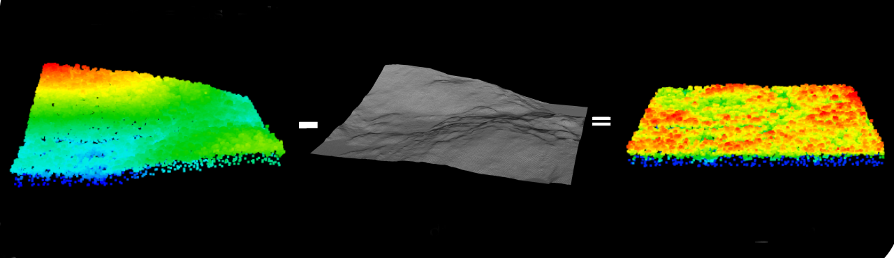

Chapter 6 Photogrammetric Post-Processing
Post-processing of photogrammetric data occurs following export from point cloud generation. Considerations surrounding post-processing should include the software being used, key parameters, approaches for efficient processing workflows (scripting), and desired final outputs.
6.1 Software choices
There are many proprietary and open source software options for point cloud processing. For this report, we highlight LAStools [27] and the lidR package [28] available in the programming language, R.
6.1.1 LAStools
LAStools [27] is arguably the fastest and most memory-efficient lidar processing software. Some tools and functionalities are free to use, while others require licensing to unlock full capabilities. For example, a licensed version of LAStools facilitates multi-core point cloud processing, which is especially valuable when processing large data acquisitions. The use of LAStools without a license limits users to a smaller range of processing tools, though key processing steps such as point classification (lasground), terrain normalization (lasheight), and metric production (lascanopy) are all possible without a license.
6.1.2 lidR
The lidR package [28] is software developed with the R processing language with C++ integrations. lidR is entirely free and open-source with active development. An in-depth description of the inner workings of this package can be found here. Processing within lidR can be done in parallel, dramatically increasing processing speeds, and users are able to create user-defined functions and processing workflows, which allow for data-tailored approaches. lidR is capable of performing all the tasks of a fully licensed version of LAStools, though because it is scripted using R, processing times are often slower.
6.2 Workflows/Scripting
Processing photogrammetric data is an iterative approach where the same processing steps are applied to data tiles in sequence. Some steps are optional depending on storage limitations and intermediate processing steps may vary. Fundamental steps are covered in subsequent sections.
6.2.1 Compression
Point cloud data standards are specified by the American Society for Photogrammetry and Remote Sensing (ASPRS). In its most raw form, point cloud data are a table of XYZ coordinates and attributes (i.e. classification, scan angle, spectral information, etc) for each point. The de facto open-source format for point cloud data is .las, though the compressed .laz format facilitates substantial file compression. Compression is performed using LASzip [29], which is directly integrated into both LAStools and lidR. Though .laz files take slightly longer to read and write during processing, compression results in files that are 7-20% of the size of their .las counterparts. We highly recommend conversion of .las to .laz files prior to processing, or during the first step of processing. The .laz format should be maintained for all intermediate point cloud files.
6.2.2 Tiling and Buffering
Data tiling is a fundamental step to efficient point cloud processing. Point cloud files can often be large and bulky, making them difficult - if not impossible - to process. The remedy to these large files is to split them into tiles, which will then be processed individually. Tile size (e.g. 1000 x 1000 m) is often dependent on data characteristics such as point density. File size will scale with point density and file extent, so tile size should be chosen to balance size within the context of available computing power. Limiting tile sizes to >100 MB has worked well for our research, though processing using larger files sizes is possible.
Buffering is often conducted alongside tiling. Adding a buffer refers to a generally small distance that is added onto the base tile size. For example, if a 5 m buffer is added to a 1000x1000 m tile, the buffered tile will have the dimensions 1005x1005 m. Buffering is used as a method to reduce the impact of tile edge effects in downstream processing (e.g. metrics mosaicking, individual tree segmentation).
It is extremely important to note that lidR and LAStools handle buffers differently, though their importance remains the same. For LAStools, users must explicitly specify buffers, while in lidR buffering is performed on the fly without the requirement for user input (though specifying sizes are possible and simple to do). Best practice for buffering within LAStools is to use the -flag_as_withheld switch, which flags all buffer points for easy removal later on.
All processing steps following tiling are iterated individually on each tile.
6.2.3 Noise filtering
Point cloud data are prone to having noise from various factors. Birds, clouds, haze, and in the case of photogrammetric data, mismatched points, can cause erroneous data to be present. Filtering for these noise data is recommended prior to further processing, which involves removal based on surrounding point density. Algorithms that do this generally have a three dimensional moving window that moves across point cloud tiles. When a tile with very low point density is detected it tests to see whether points are within a specified distance. If the test fails then those points will be classified as noise and the moving window will continue.
6.2.4 Classification
This is a fundamental step. Classification involves assigning a type to each point, which in the most basic sense is ground or non-ground. This point is fundamental for creating DEMs that facilitate point cloud normalization. There are multiple algorithms that can be used to classify a point cloud. The most common is known as the progressive triangular irregular network densification (PTD), which generate triangular networks from points to create a ground surface. Other methods such as the progressive morphological filter (PMF) and cloth simulation filter (CSF). Each of these algorithms are available through the lidR package. For most situations, we recommend using PTD.
6.2.5 Normalization
Following classification, normalization makes all points above ground relative to a standard ground height of 0 metres. Point cloud normalization references points to their height above ground, as opposed to their height above a vertical datum (i.e. ellipsoid or geoid). This has the effect of removing the undulation of terrain. The simplest method to normalize a point cloud is to subtract the DEM surface heights from the absolute elevation to generate a point cloud with height values that are all relative to the ground surface, where the ground surface has a value of 0. Normalized point clouds are used for generating wall-to-wall metrics including mean height, cover, and variability. Normalization is visualized in Figure 6.
6.2.6 Point Cloud Normalization with Co-Occurring LiDAR
DAP-derived DEM may be unreliable in areas with moderate to high degrees of canopy cover due to the image-based nature of DAP data. In such cases, normalizing point clouds with DAP-derived DEM will produce inaccurate height measurements. To correct for this, a DEM derived from co-occurring LiDAR can instead be used for point cloud normalization [30]. This process is visualized in Figure 7.
6.3 Standard Data Products
There are a number of data outputs that are standard for point cloud data in the context of forest management.
6.3.1 Digital Terrain Model/Digital Elevation Model
The DEM (also commonly referred to as a digital terrain model, or DTM), is created by using only points classified as ground in non-normalized tiles. The DEM is a raster layer with a user-specified resolution (e.g. 1 m) representing ground elevation. It is important to be cognizant of the density of ground points within a given dataset. Lower densities will result in fewer ground points overall, which can therefore limit the spatial resolution of the produced DEM.

6.3.2 Canopy Height Model
The canopy height model (CHM) is created using normalized data. The CHM is a raster layer with a user-specified resolution (e.g. 1 m) representing the maximum height of vegetation (or structures) above ground. Given that the CHM is generated using normalized data, all vegetation heights are relative to ground across the acquisition coverage.
6.3.3 Standardized Metrics
Normalized point clouds allow for spatially explicit comparisons of above ground vegetation. This could be as simple as determining where the tallest trees are, or where the most variability in height is. These statistical summaries can be calculated at any spatial resolution, producing rasters capable of being integrated into GIS software for planning and management, or to be used in inventory management and analysis. Given that point clouds are really just a group of points, an endless list of statistical metrics can be calculated [28], [31], [32]. Metrics are often subdivided into height, cover, variability, and vertical distribution classes, though metrics can also be derived from additional point attributes such as RGB values from corresponding pixels. Metrics calculation is generally considered the final step of point cloud post-processing.